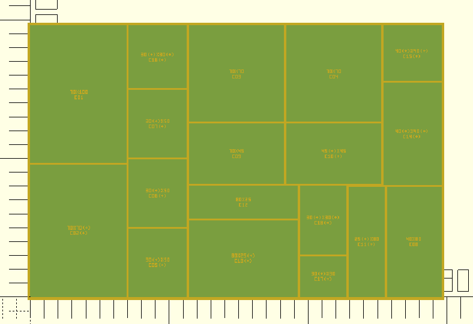
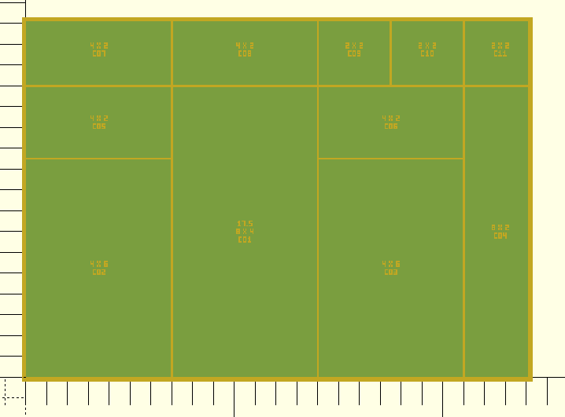
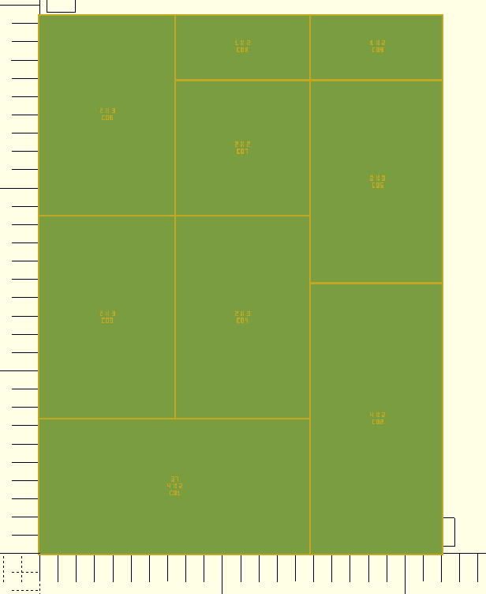
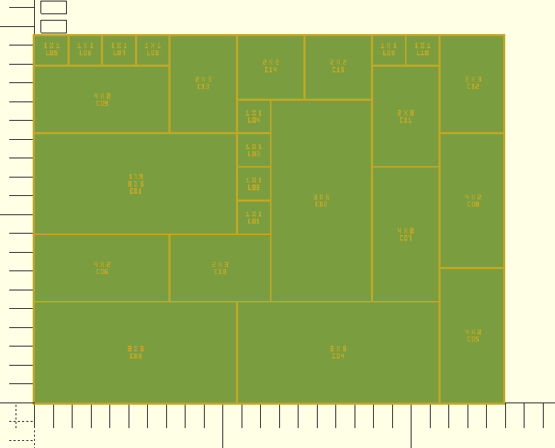

Box Generator
End-user documentation for boxGenerator.py and gridLayoutGenerator.py
Overview
Box Generator is a set of two interactive Python command-line tools that create fully customizable, 3D-printable storage boxes with automatically arranged interior compartments. You describe the box size and the compartments you want; the program searches for the best layout and generates ready-to-slice files.
Both tools produce the same three types of output:
- An OpenSCAD (
.scad) file — editable 3D source. - An STL (
.stl) file — ready to open in any slicer. - A hidden project JSON file — saves your answers so the next run can reuse all defaults.
| Tool | Best for | Input style |
|---|---|---|
boxGenerator.py BG |
Flexible packing; compartments described in millimetres | Physical sizes (mm), cluster groups, placement preferences |
gridLayoutGenerator.py GL |
Uniform grid; compartments described in grid cells | Grid size (mm/cell), compartment sizes as NxM cells |
Requirements
- Python 3.8 or newer — no extra packages needed.
- OpenSCAD (optional) — to view or re-render the
.scadfile. - Slicer software (optional, e.g. PrusaSlicer, Cura) — to print the
generated
.stlfile.
Quick Start
Open a terminal, change to the project folder and run one of:
python3 boxGenerator.py
python3 gridLayoutGenerator.py
On Linux/macOS the scripts are also directly executable after
chmod +x boxGenerator.py:
./boxGenerator.py
./gridLayoutGenerator.pyTry the built-in example (boxGenerator)
An example project is included. When boxGenerator.py asks you to select a project,
choose _boxGeneratorTest.
Press Enter on every prompt to accept the defaults and watch the layout search run.

Example: the _boxGeneratorTest project rendered in OpenSCAD
boxGenerator.py BG
This tool works in physical millimetres. You describe each group of compartments by its cell size in mm, how many you want, and how they should be clustered together. The packing algorithm tries many random arrangements to find the best fit.
Step 1 — Select or create a project
When you start the script, it lists any existing projects it finds
(.boxGenerator.*.json files in the current folder).
Select a project:
[1] myBox
[2] newProjectEnter the number of an existing project to reload its saved settings, or choose the last option to type a new project name. Your answers for this run are saved automatically so the next run shows them as defaults.
--erase flag:python3 boxGenerator.py --erase
Step 2 — Box dimensions
Enter the outer size of the box as length × width × height in mm:
Enter outer box size (length x width x height, example: 300x200x80) [304x204x80]:
Press Enter to keep the shown default, or type a new value such as 250x180x60.
Decimals are accepted; use either . or , as the decimal separator.
Step 3 — Wall & bottom parameters
The script asks for four thickness values (all in mm):
| Prompt | What it controls | Typical value |
|---|---|---|
| Inner wall height | Height of the compartment dividers inside the box | Same as outer height or slightly less |
| Outer wall thickness | Thickness of the four outer walls | 2 mm |
| Inner divider thickness | Thickness of the walls between compartments | 2 mm |
| Bottom thickness | Thickness of the box floor | 2 mm |
Step 4 — Optional leftover compartment
After packing all requested compartments, any remaining floor space can optionally be divided
into extra small compartments. Enter a size such as 20x20 to enable this, or
press Enter / type - to skip it.
Enter leftover compartment size (length x width, '-' = skip) [20x20]:Step 5 — Packing settings
| Prompt | What it controls | Default |
|---|---|---|
| Random seed | Starting point for the random layout search. The same seed + same inputs always produce the same result. Change the seed to try a different arrangement. | 12345 |
| Number of layout attempts | How many complete layout searches to run. Higher = more likely to find a good fit, but takes longer. | 120 |
| Attempts per cluster group | How many candidate positions to evaluate for each group during one layout attempt. | 50 |
Step 6 — Compartment definitions
This is the core of the tool. You define groups of compartments one by one. Press Enter with no input (and no default exists) to finish entering compartments.
Enter compartment definitions.
Example size: 25x30
Cluster size means how many equal compartments must touch each other.
Example: size 25x30, count 8, cluster 3 => groups of 3, 3, and 2
Empty size reuses the default size and still shows the remaining questions.
If no default exists yet, empty size finishes input.
Use 'keep' to reuse a default compartment without editing.
Use '0x0' to remove/skip a compartment and skip follow-up questions.For each compartment group, you provide:
-
Size — cell dimensions in mm as
length×width, for example30x25. Typekeepto reuse the entire saved definition without re-entering it. Type0x0to remove a saved compartment from the project. - Count — total number of individual compartments of this size.
- Cluster size — how many compartments of this size must be placed touching each other in a row or column. For example, size 30×25, count 8, cluster 3 creates groups of 3 + 3 + 2.
-
Preferred placement —
random,front, orback. Controls which side of the box the packer prefers for this group. -
Side preference (only for front/back) —
left,right, ormiddle.
keep to accept all saved values for that compartment instantly.
Progress output
During the layout search the tool prints a line like:
Packing progress: attempt 40/120, best placed compartments 17/18, current missing compartments C04, C11- attempt 40/120 — currently on the 40th of 120 layout attempts.
- best placed 17/18 — the best solution found so far placed 17 of the 18 requested compartment groups.
- current missing C04, C11 — in this specific attempt, groups C04 and C11 have not been placed yet.
The search stops early as soon as a perfect fit (all compartments placed) is found.
Output files
After a successful run you will find three new files in the working directory:
| File | Purpose |
|---|---|
{project}.scad |
OpenSCAD source — open in OpenSCAD to inspect or re-export |
{project}.stl |
STL mesh — open directly in your slicer |
.boxGenerator.{project}.json |
Saved project settings (loaded as defaults on the next run) |
gridLayoutGenerator.py GL
This tool divides the box floor into a regular square grid. You specify compartment sizes
as multiples of grid cells (e.g. 2x3 means 2 columns × 3 rows of grid cells).
The actual millimetre dimensions are computed from the grid size you choose.
Step 1 — Select or create a project
Works the same as for boxGenerator.py — saved settings are loaded from
.gridLayout.{project}.json.
Step 2 — Layout mode
Choose how you want to specify the box floor dimensions:
Layout mode:
[1] Fixed grid (enter gridSize, then box dimensions)
[2] Fixed box Length (suggest gridSize and box Width)
[3] Fixed box Width (suggest gridSize and box Length)| Mode | When to use |
|---|---|
| 1 — Fixed grid | You already know the grid cell size in mm. Enter it, then enter the full outer box size. The outer dimensions must be exact multiples of the grid size. |
| 2 — Fixed box Length | You know the box length (e.g. it must fit a specific drawer). The tool suggests grid sizes that divide the length evenly and then suggests matching widths. |
| 3 — Fixed box Width | Same as mode 2 but you fix the width instead of the length. |

Mode 1 — Fixed grid size; you enter gridSize then full LxWxH.

Mode 2 — Fix the box length; the tool suggests valid grid sizes and widths.

Mode 3 — Fix the box width; the tool suggests valid grid sizes and lengths.
Step 3 — Packing settings
Same prompts as boxGenerator.py: random seed, layout attempts,
and attempts per cluster group.
Step 4 — Grid & box size
Depending on the mode chosen above, the tool guides you through selecting or confirming:
- Grid size — size of one grid cell in mm (e.g.
25). - Outer box length and width — must be exact multiples of the grid size.
- Outer box height — total outer height in mm.
[3]) to select that option.
Step 5 — Wall parameters
| Prompt | What it controls | Typical value |
|---|---|---|
| Outer wall thickness (outerWall) | Thickness of the four outer walls | 1.4 mm |
| Inner wall thickness (innerWall) | Thickness of the dividers between compartments | 1.0 mm |
| Bottom thickness | Thickness of the box floor | 1.4 mm |
| Inner wall height | Height of the compartment dividers | Outer height − bottom thickness |
Step 6 — Compartment definitions
Enter compartment requirements.
Use format NxM (examples: 1x1, 1x2, 2x6, 3x4)
Empty size reuses the default size and still asks for count.
If no default exists yet, empty size finishes input.For each compartment type, enter:
-
Size in grid cells — as
NxM, e.g.2x3means 2 columns × 3 rows of grid cells. The tool may rotate it to3x2if that helps the layout fit better. -
Count — how many compartments of this size you want.
Enter
0to skip a saved compartment type without removing it from the project.
Repeat until all compartment types are entered, then press Enter with an empty size field to finish.
1×1 leftover compartments. These appear with labels starting with
L (e.g. L01).
Progress output
The progress line looks like:
Packing progress: attempt 24/100, best placed compartments 14/15, current missing compartments spec 04 x1- attempt 24/100 — currently on attempt 24 of 100.
- best placed 14/15 — best result so far placed 14 of the 15 requested compartments.
- current missing spec 04 x1 — in this attempt, one compartment of specification 4 is still unplaced.
Output files
| File | Purpose |
|---|---|
{project}.scad |
OpenSCAD source |
{project}.stl |
STL mesh for slicing |
.gridLayout.{project}.json |
Saved project settings, grid layout, and full placement data |
Choosing the right tool
| Question | Use boxGenerator.py |
Use gridLayoutGenerator.py |
|---|---|---|
| Do you know the exact mm size of your items? | ✔ Yes — enter sizes directly in mm | — Less direct |
| Do you want a regular, uniform grid? | — No guarantee | ✔ Yes — grid is always uniform |
| Do compartments need to be exactly as requested? | ⚠ May shrink slightly to improve fit | ✔ Never distorted (only rotated) |
| Do you want compartments grouped side-by-side? | ✔ Cluster size controls this | — Not available |
| Should the box fit a specific drawer/shelf? | Enter exact outer size | ✔ Modes 2 & 3 suggest valid sizes |
Working with the output files
Viewing the .scad file in OpenSCAD
- Install OpenSCAD.
- Open the
.scadfile via File → Open. - Press F5 to preview, or F6 to render the full geometry.
- Optionally export a higher-quality STL via File → Export → Export as STL.
Slicing and 3D printing
- Open your slicer (PrusaSlicer, Cura, Bambu Studio, …).
- Import the
.stlfile. - Choose your material and layer height (0.2 mm layer height works well for most boxes).
- Slice and transfer to your printer.
.scad file in OpenSCAD and export the STL from there
(F6 then Export as STL).
Re-running a project
Start the same script again and select the same project name. All your previous answers appear as defaults in brackets — press Enter at each prompt to reuse them unchanged, or type a new value to override only that setting.
To reproduce the exact same layout, keep the random seed unchanged. To explore different arrangements without changing the box or compartment sizes, change only the seed.
Troubleshooting
Some compartments do not fit
The progress output shows something like "best placed 14/15" and the run ends without producing a file. Try one or more of:
- Increase the box size.
- Reduce the count of one or more compartment types.
- Increase layout attempts (e.g. from 120 to 300).
- Increase attempts per cluster group (e.g. from 50 to 100).
- Try a different random seed.
The layout changes when I re-run
Confirm that the random seed is the same as before. Also check that none of the compartment counts or box dimensions have changed. The same seed + same inputs always produce the same layout.
boxGenerator.py changed a compartment size
boxGenerator.py may shrink a compartment by up to 10 % to improve the overall fit.
The .scad file comments and the compartment labels show both the requested and
the actual sizes. If exact sizes are critical, use gridLayoutGenerator.py instead
(it never distorts sizes) or increase the box dimensions slightly.
gridLayoutGenerator: "outer dimensions must be a multiple of gridSize"
In mode 1 you must enter outer length and width values that are each an exact multiple of the grid size. For example, with grid size 25 mm the valid outer lengths include 100, 125, 150, 175, … mm. Use modes 2 or 3 to let the tool suggest valid combinations automatically.
OpenSCAD vs STL look different
The .scad file is the authoritative source. Small visual differences can appear
because the Python STL writer uses simpler triangulation. For final print quality, render the
STL from OpenSCAD directly.
Erasing saved project settings
Run with --erase or --empty to delete the stored defaults for the
selected project before the run starts:
python3 boxGenerator.py --erase
python3 gridLayoutGenerator.py --eraseAlternatively, simply delete (or rename) the hidden JSON file:
.boxGenerator.{project}.json or .gridLayout.{project}.json.